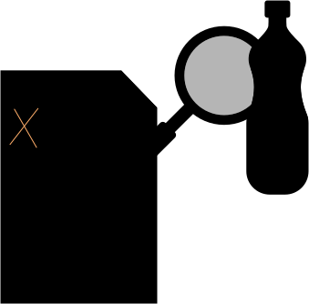

L’objectif de cette étape est de transformer la solution d’éco-conception sélectionnée en un produit ou service réalisable, puis de vérifier ses performances avant sa mise sur le marché.
Cette étape s’étale sur de longs mois, voire des années, et s’inscrit dans le processus de développement de nouveaux produits : développement, conception, tests et validations (en laboratoire mais aussi à l’usine et auprès des clients), plan de production et plan de lancement, puis montée en cadence de production, et préparation du lancement commercial…
La piste retenue pour le Saclay Cola (un nouveau procédé de fabrication du sirop) est développée, testée puis validée avant son déploiement industriel.
-
prototyper
Installer un pilote et tester le procédé.
-
valider

Vérifier la qualité du cola, la sécurité et les gains attendus.
-
industrialiser

Adapter l’usine, former les équipes, suivre les premiers essais.
-
déployer et suivre
Augmenter progressivement la production et mesurer les consommations.
Si les tests ne sont pas concluants, on ajuste puis on teste à nouveau.